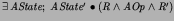
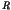

There has been extensive work on program development by transformation and calculation. The principal work on calculating simulations in a relational setting is due to He Jifeng and Hoare [110]. In [110] refinement calculations in the context of total relations were considered. Prior to this, rules for calculating downward simulations of Z specifications were given by Josephs in [133]. It was commented that the simplification of the calculation to  could be derived when  defines a (partial) surjective function from to .
In [63] Derrick and Boiten considered the calculation of operations and showed that this hypothesis could be relaxed. In particular, surjectivity was not necessary and it was sufficient to consider the retrieve relation to be a function on a restricted domain. [63] also derived the calculations for upward simulations of Z specifications. The specification of the MSMIE protocol from Example 5.0.1was originally specified in CCS in [41] by Bruns and Anderson.
The most general operation refinement in Z was first defined by Ainsworth, Cruickshank, Wallis and Groves [5], and called amalgamation there. In a setting of abstract binary relations, it was also used by Frappier et al [92] (under the name of demonic join) in the context of feature interaction. We extended this to the most general data refinement in [23].
Viewpoint specification in Z has also been extensively studied by Zave and M. Jackson [213,214] and D. Jackson [125].